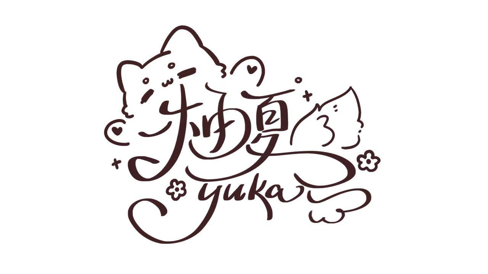

柚夏
Yuka
SONG REQUEST
我的歌单
点歌指南
♧
主播登录

✦
A LITTLE SONG, A LITTLE SUMMER
今天，想听小柚
唱什么
呢？
把喜欢的歌，唱给刚好遇见的你。
前往直播间
↗
去挑一首歌
↓
唱唱歌，也聊聊天
✧
✦
♪
NOW SINGING IN YOUR HEART
柚心民，谢谢你今天也陪着我♥
▂▅▃▆▂
THE SONGBOOK
小柚的歌单
✿
挑一首喜欢的歌，让我们在旋律里见面吧。
—
首歌，等你来点
当前展示的是示例歌单，尚未导入 Yuka 的正式歌单。
去导入自己的歌单 →
/
⤨
帮我选一首
语种
分类
正在加载歌单…
♡ 我的收藏
0
排序
默认顺序
歌名 A–Z
☷
正在打开小柚的音乐盒…
♪ 今天也想用歌声，陪你多待一会儿。
×
HOW TO REQUEST
把这首歌，交给小柚 ♡
点歌 銀色飛行船
知道啦，去选歌
×
长按复制这句口令
浏览器暂时不允许自动复制，可以选中下面的文字手动复制。
复制好了